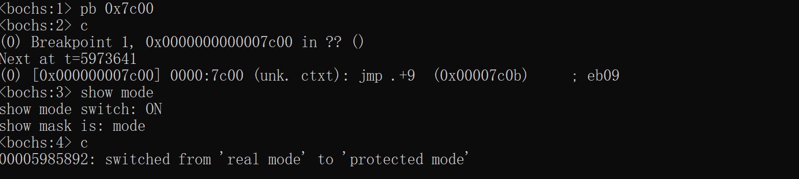

3.2_进入保护模式
文章目录
进入保护模式
[TOC]
进入保护模式
进入保护模式的步骤：
- 关闭中断，打开地址线A20GATE，使得CPU可以访问1M以上的内存空间。
- 设置CR0寄存器，进入保护模式。
- 加载临时GDT
- 进入保护模式后，首先执行jmp指令。因为内存寻址方式改变，需要刷新指令流水线
打开A20Gate
1. A20Gate的作用
在实模式下，A20Gate是关闭的，意味着只能使用20根地址线，需要通过打开A20Gate,访问第21根以上的总线。
A20Gate关闭时侯的内存访问：
在8088 CPU下, 只能使用20根总线 .
因此,初始化时, A20Gate关闭式，使用20根总线. 所以寻址范围位 0x00000 ~ 0xFFFFF,总共1M的地址范围。
当访问的地址大于这个范围，高位的值将被截取掉，导致超出1M的地址访问会使得CPU回滚到1M内地址范围的现象
例如:
当使用 [0xFFFF :0xFFFF ] 内存地址，得到的地址位 0x10FFEF 。但是在实模式下，由于20根总线的限制，最高位的1是无效的，实际的访问地址
回绕到[0x0FFEF]。
A20Gate打开后的内存访问：
后期,80286使用24根总线,而80286有24根总线,80386有32位总线.
打开A20Gate， 可以使用到32位的地址总线，内存地址访问也达到了1«32 的4G范围。
实际上开启A20Gate，总线的寻址能力达到了4G，但是cpu的内存访问能力因为16位段寄存器，和16位偏移地址的限制，并不能协调工作。
A20Gate打开后, 还需要进入保护模式, 建立GDT描述名, 进行段地址 和 内存的映射关系, 使用新的内存地址访问方式 . 突破cpu的内存访问限制。
2. 开启A20Gate
开启A20Gate，只要设置io端口0x92的第一位为1就可以了。
|
|
设置CR0寄存器，进入保护模式
CR0寄存器
CR0寄存器是一个32位的寄存器
设置CR0寄存器的最高位为0，最低位为1，则可以进入保护模式。
CR0寄存器的作用
- 改变段寻址方式，使用段描述符方式寻址。
- 实模式指令的操作数默认为16位，保护模式指令的操作数默认为32位。
代码：
|
|
loader.asm完整代码如下
|
|
使用bochs调试
在0x7c00打断点，输入c跳转执行
$ pb 0x7c00
$ c
输入显示切换模式命令
$ show mode
输入c继续执行
$ c
可以看到控制他输出：
00017609546: switched from ‘real mode’ to ‘protected mode’
说明系统成功的从实模式切换到保护模式

查看CR0的PE位: 值为1
$ creg

|
文章作者 寒冰
上次更新 2019/01/05